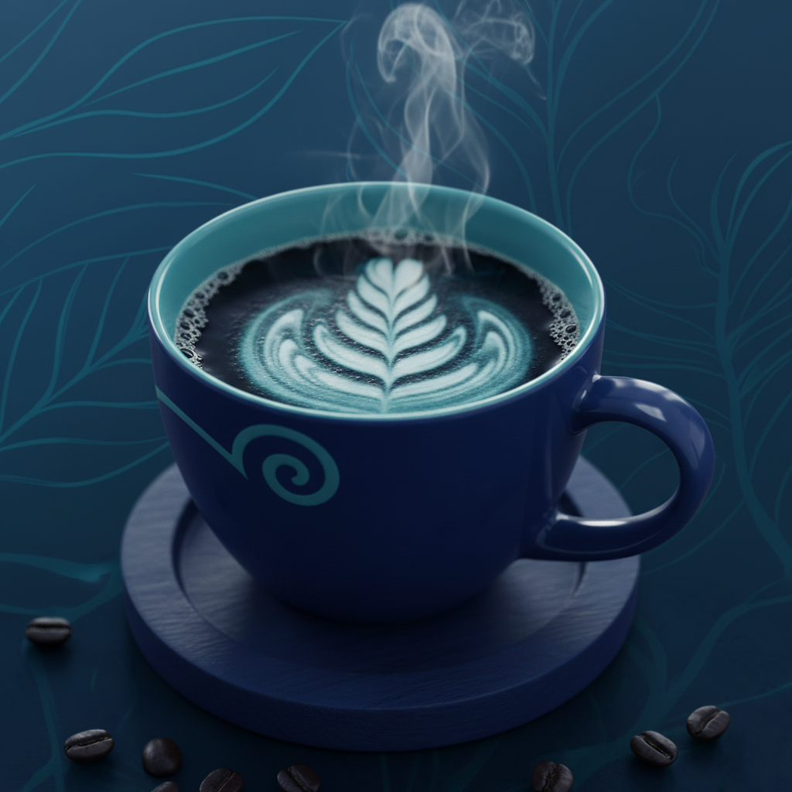

CV
HABILIDADES TÉCNICAS.
Toolkit.
Figma
Illustrator
Notion
Trello
Design-to-Code.
HTML5
CSS3
JavaScript
VS Code
Git & GitHub
Metodologías.
Design Thinking
User-Centered Design (UCD)
Agile (Scrum y Kanban)
Workflow de Diseño.
User Research
User Personas
Wireframing (Low-fidelity)
Wireframing (High-fidelity)
Prototyping & Handoff
EXPERIENCIA LABORAL.

Grano & Click
Generation México
Oct 2025 - Ene 2026
UX/UI Designer & Front End Developer
Diseñé y programé la interfaz de Grano & Click, una cafetería moderna. Lideré la identidad visual en Figma y la implementación interactiva con código limpio.
Ver ProyectoFORMACIÓN EDUCATIVA.
2025 - 2026
Desarrolladora Java Full Stack.
GENERATION MÉXICOConstruir aplicaciones web completas, dominando el frontend y el backend.
2016 - 2019
Ingeniería Textil.
Instituto Politécnico Nacional (IPN)Enfoque en procesos industriales y optimización de producción.
2009 - 2012
Diseño de Modas.
CETIS 9 - Josefa Ortiz de DomínguezFundamentos de diseño, teoría del color, tendencias y gestión de negocios.